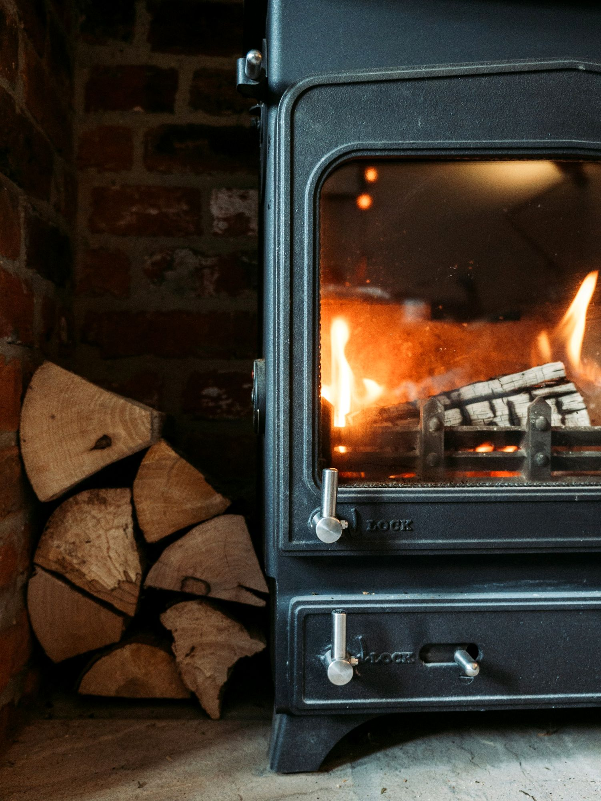
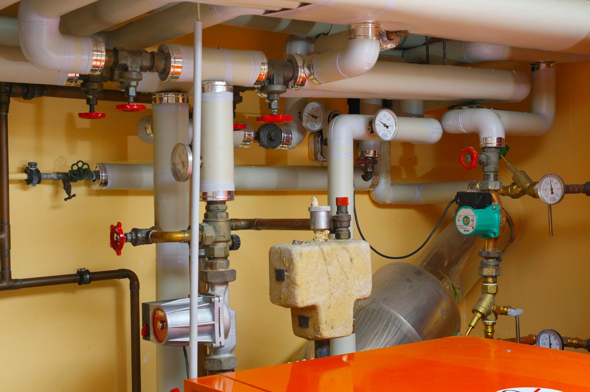

Ce que Machado Fils installe.
Le détail par famille, tel que présenté par l'entreprise.
Chauffage
- Chaudières gaz à condensation
- Plancher chauffant
- Radiateurs eau chaude
- Chauffage central
- Chaudières à granulés
- Chaudières à bois

Énergies renouvelables
- Pompes à chaleur air/eau
- Poêles à granulés
- Chauffe-eau solaire
- Chauffe-eau thermodynamique

Climatisation et ventilation
- Pompe à chaleur air/air
- Climatisation
- VMC simple flux
- VMC double flux
- VMC hygroréglable

Plomberie et salle de bain
- Installation de plomberie
- Sanitaires
- Salle de bain clé en main

Chantiers tertiaires
- Chauffage tertiaire
- Plomberie tertiaire
- Menuiserie tertiaire
- Terrassement